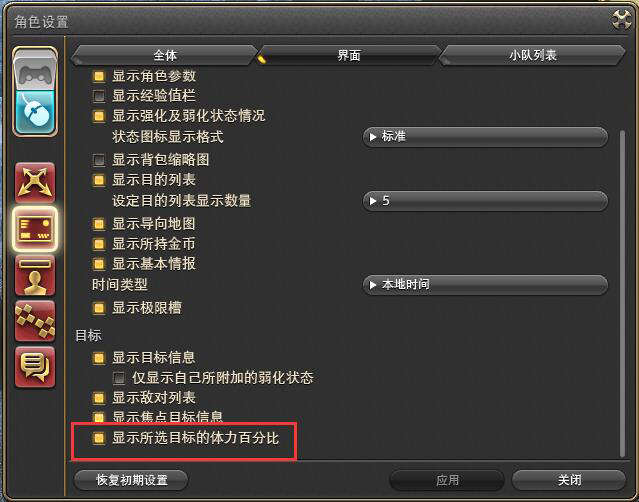

选择你要挑战的木人 木人歼殛战 (未选择) 俾斯麦歼殛战 亚历山大机神城 启动之章 亚历山大机神城 启动之章1 亚历山大机神城 启动之章2 亚历山大机神城 启动之章3 亚历山大机神城 启动之章4 圆桌骑士幻想歼灭战 萨菲洛特歼殛战 亚历山大机神城 律动之章 亚历山大机神城 律动之章1 亚历山大机神城 律动之章2 亚历山大机神城 律动之章3 亚历山大机神城 律动之章4 尼德霍格传奇征龙战 选择你要挑战的职业 骑士 战士 暗黑骑士 白魔法师 学者 占星术士 武僧 龙骑士 忍者 吟游诗人 机工士 黑魔法师 召唤士
以下メモ。 ・打倒！吉田P！ 参照电击的报道。 ---顺便说一下、我在PLL时挑战的是“启动篇：零式4”的难度。 ---现在我的最好记录是用苍穹之咒杖和一身禁书强化装备下剩余15秒、作为黑魔有自信的人以剩余15秒为目标挑战一下吧。 ・第一个木人歼灭战是极骑神的木人。 ・机工城亚历山大：启动篇之类的、是启动篇1-4共通的木人。因为这个所需的dps大致差不多。 ・极罗波那讨伐战跟极云神是共通的。 ・部分安卓端、一些浏览器可能会不能正常运作。 ・如果不能正常运作的话，试一下别的手机别的浏览器。 ・角色设置＞界面设置＞界面 在「显示所选目标的体力百分比」上打勾就能表示出剩余HP百分比。 